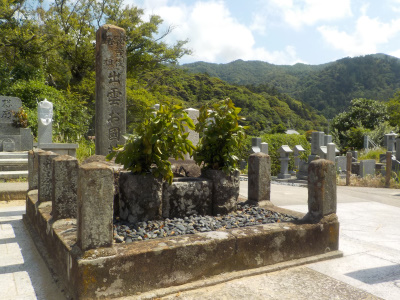

出雲阿国の墓は普通に墓地にありました。
2022/06/12

観光地として紹介されていますが、すぐ隣には一般の方のお墓があります。
普通に墓地。
出雲阿国が好きな人以外は行かない方がいいと思います。
好きな人は聖地巡礼できますね。
島根県出雲市大社町杵築北2529
2022/06/12

観光地として紹介されていますが、すぐ隣には一般の方のお墓があります。
普通に墓地。
出雲阿国が好きな人以外は行かない方がいいと思います。
好きな人は聖地巡礼できますね。